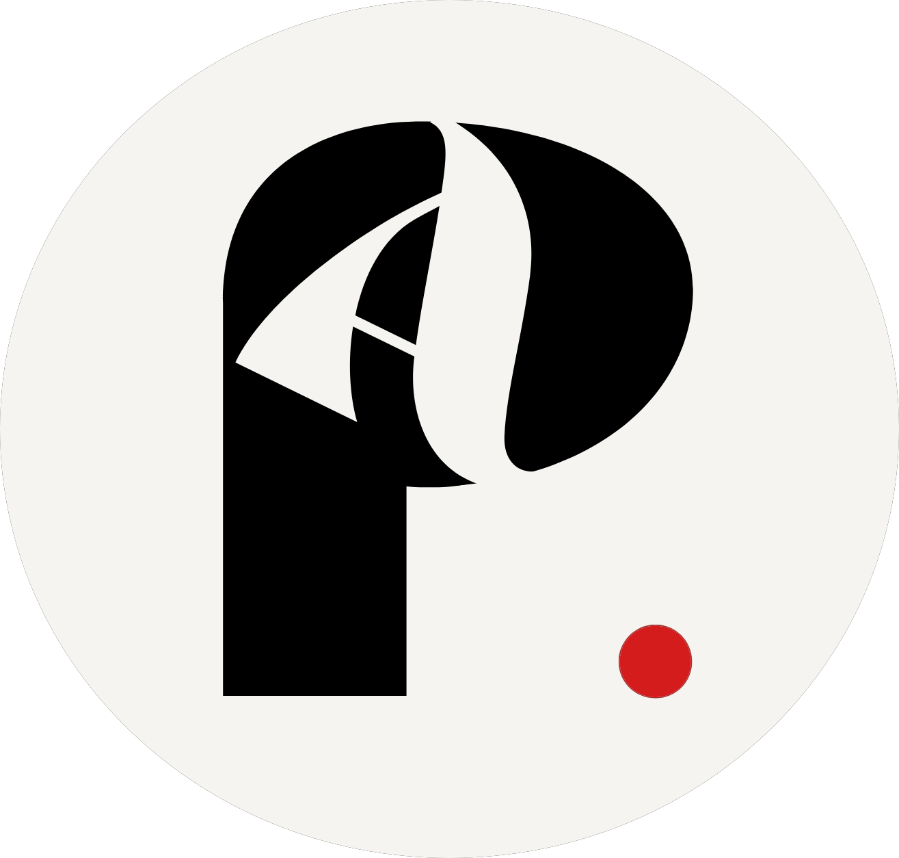

Andrea PizarroHi! My name is Andrea and I am currently studying Information Technology. I enjoy transforming concepts into completed projects that deliver solutions to problems and create satisfaction for users.
I strive to be a better developer by improving myself technically as well as my problem-solving capabilities. My aspiration is to be a competent developer that can develop applications that are efficient and user-oriented.
I love to experiment and try out new things in my life, be it technology, design, or any other peice of my daily routine. Trying out new things helps me learn new things through the internet and discover some amazing facts.